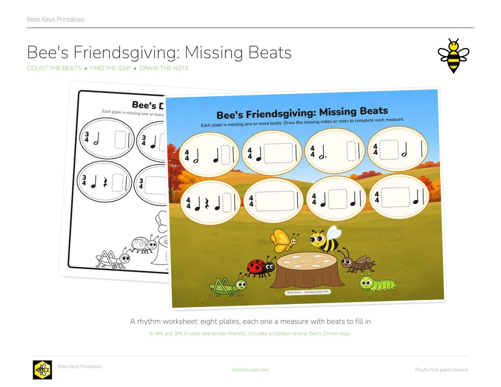
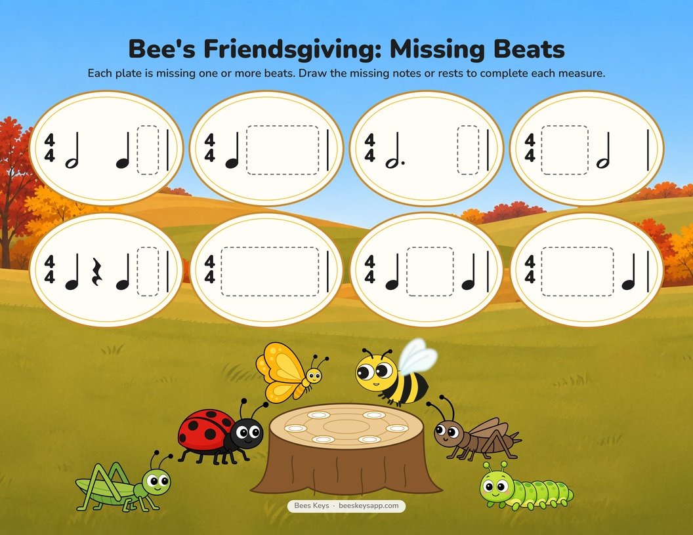
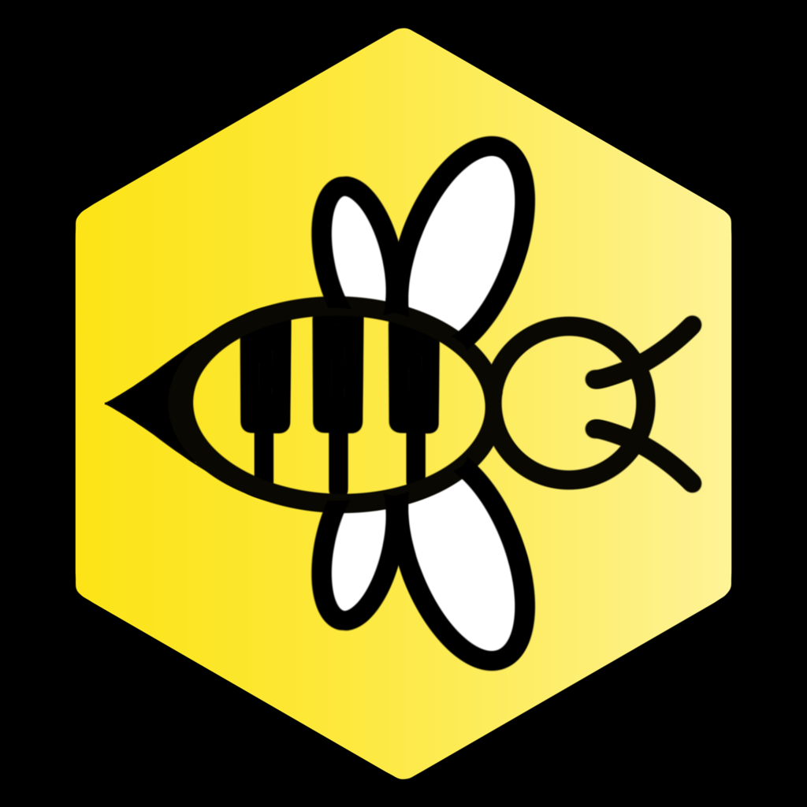

Free printable
Bee’s Friendsgiving: Missing Beats
Free Rhythm Writing Worksheets
By Kristianna Callahan · Published November 16, 2026

Click to download the free PDFBee and friends are getting together for a fall feast, but something is missing from their plates!
In these free rhythm worksheets, students practice counting beats and recognizing note and rest values by completing eight measures.
There are two versions available:
- 4/4 Time: Complete each measure with four beats.
- 3/4 Time: Complete each measure with three beats.
Each plate has one or more missing beats. Students must figure out how many beats are missing, then draw notes or rests to complete each measure.
Extra Ways to Use These Worksheets
- Find another solution! Challenge students to complete each measure in more than one way.
- Clap the rhythms! Have students clap or tap each completed measure.
- Add a challenge! Encourage students to use a combination of notes and rests to fill the missing beats.
Download both worksheets for free and help Bee and friends complete their rhythms! 🐝🍂
Download the free printable
Free PDF · no sign-up Download in color

More from Bee and friends 🐝

Bees Keys
Name the keys
Bee and friends come from Bees Keys, the app that teaches the piano key names. A bee flies across the screen carrying a note name, and students tap the matching key before it escapes. Free, with no ads.
View on the App Store →Want more free music teaching resources?
I'm making more printables, games, and teaching resources. Send me a note and I'll pass new freebies your way.
Free · unsubscribe any time Send me new freebies
Opens your mail app. Your address is only ever used to send you the free resources.